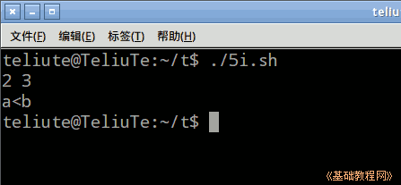
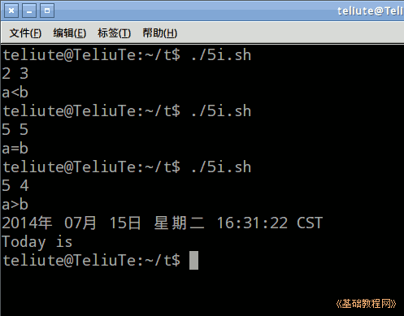

Bash Shell 脚本编程基础
作者：TeliuTe 来源：基础教程网
五、if 语句 返回目录 下一课if 是分支语句，两种情况中选择一种；
1、if 条件判断
1）启动文本编辑器gedit，输入第一行 #!/bin/bash ，保存文件为5i.sh，并设置可执行权限；
2）if 语句的格式是 if [条件或命令] ; then 命令; else 命令; fi ，注意命令后面用分号分隔一下，竖式的第一个后面要分号，最后的结尾是反过来 if；
3）输入下面的 read a b; if ((a>b)); then echo "a>b"; else echo "b>a"; fi ，程序运行时从键盘输入两个数，用空格分开然后按回车；
if 后面的条件测试，跟上一课的逻辑运算是一样的，数字用圆括号，字符用方括号，还可以用其他操作符；

4）if 里面可以嵌套另一个if语句，注意最后的fi关闭别忘记了，继续输入；
输入代码是使用嵌套格式，一层一层缩进；
5）如果if后面跟的是一个命令，那么命令正常执行后，接着then语句，否则就执行else语句，继续输入；
一个命令正常运行后的返回值是0，其他情况会返回错误代码；

6）下载本课范例；
本节学习了if语句的基础知识，如果你成功地完成了练习，请继续学习下一课内容；
本教程由TeliuTe制作|著作权所有
基础教程网：http://teliute.org/
美丽的校园……
转载和引用本站内容，请保留作者和本站链接。